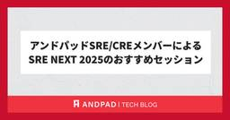
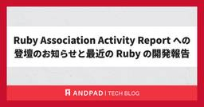

ANDPAD Tech Blog
https://tech.andpad.co.jp/
ANDPAD の開発部からのお知らせやエンジニアリングに関する話題を発信するTech Blog です。
フィード

アンドパッドSRE/CREメンバーによるSRE NEXT 2025のおすすめセッション 20
20
ANDPAD Tech Blog
こんにちは。SREチームの吉澤です。最近、SRE NEXTドリブンでSREとSWEでタッグを組んでインフラコスト削減した話を書きました。まだの方はぜひ読んでみてください。 アンドパッドは、7/11(金)〜12(土)開催のSRE NEXT 2025にCOFFEEスポンサーとして協賛しました！ 今回はアンドパッドブースの様子と、現地参加したメンバーによるおすすめセッションをご紹介します。アーカイブ動画もこれから公開されると思いますので、これからSRE NEXT 2025の内容を追う方は、ぜひ参考にしてみてください。 アンドパッドブースの様子 SRE/CREメンバーがおすすめするセッション SREチ…
2日前

Ruby Association Activity Report への登壇のお知らせと最近の Ruby の開発報告 1
ANDPAD Tech Blog
こんにちは、hsbt です。デス・ストランディング2のストーリーをやっと終えることができて国道建設や補修、荷物運びに専念する日々が続いています。 本エントリでは、来月開催される Ruby Association Activity Report への登壇の紹介と最近の Ruby の開発で取り組んだことについてご紹介します。 Ruby Association Activity Report に登壇します。 2025年8月28日(木)にビジョンセンター品川で開催される「Ruby Association Activity Report」に登壇します。「OSS開発者という働き方」というタイトルでフルタイ…
4日前

DataformへのGithub Copilot/Chat Agent modeの適用とチーム内普及
ANDPAD Tech Blog
はじめに こんにちは！アンドパッドのデータ部Data Drivenチームでデータアナリストをしている三田村です。一昨年の6月にアンドパッドにジョインして約2年が経ちました。 現在はプロダクトマネージャー（PdM）やプロダクトマーケティングマネージャー（PMM）といったプロダクト開発をリードする方々を対象としたデータ利活用プロジェクト（PJ）で、プロジェクトマネージャー（PJM）兼ダッシュボード開発を担当しています。 本記事では私が推進しているPJ固有の話ではなく、Data Drivenチーム全体の生産性を向上させるために、DataformへGitHub CopilotおよびGitHub Cop…
10日前
SREとソフトウェア開発者を集めた専門チームによる、開発組織全体を巻き込んだコスト削減の取り組み
ANDPAD Tech Blog
こんにちは。SREチームの吉澤です。 SREはインフラの専門性を持つため、SREチームのミッションに「インフラコスト削減」も含まれている会社は多いと思います。アンドパッドでも、主にSREチームがインフラコスト削減に取り組んできました。しかし、この取り組みだけでは削減できないコストが見えてきました。 そこでアンドパッドでは、2024年6月から、SREとソフトウェア開発者を集めた専門チームによるインフラコストマネジメントプロジェクトを開始しました。私は、SREチームとの兼務でこのプロジェクトに参加しています。プロジェクト開始から約1年が経過し、すでに大きな成果が出ています。 今回の記事では、このプ…
11日前
アンドパッドの ML API 基盤における MLOps の取り組み
ANDPAD Tech Blog
はじめに こんにちは。アンドパッドのデータ部 Data Platform チームに所属している t2sy8 です。 Data Platform チームは「ANDPADのあらゆるデータを整備し、使いやすくて信頼性のある基盤を構築」をミッションとし、他のチームと協力して日々、データ基盤や周辺システムの開発・運用を行っています。また、データ部 ML Product Dev チームと協力して ML API 基盤を開発・運用しています。 今回は、ML API 基盤における MLOps の取り組みについて紹介します。 ML API 基盤 現在、豆図AIキャプチャーを始めとして複数の ML API エンドポ…
12日前
チームのつながりを少しずつ育む - 開発・プロダクト組織で続ける月1の共有会と懇親会
ANDPAD Tech Blog
こんにちは。アンドパッド創業メンバーの1人で、エンジニアの @KanechikaAyumu です！ アンドパッドの開発・プロダクト組織では、以前から月に一度、1〜2時間ほどの全体共有会（オンライン）と、オフラインでの任意参加の懇親会をセットで実施しています。 最近、この会の運営に携わる機会を得たこともあり、改めて自分の想いを言語化して、アンドパッド社内はもちろん、少しでも興味を持ってくださる社外の方々に向けて記事を書きました。 私の司会の様子 この取り組みは、チームの垣根を越えて想いを共有し、顔の見える関係性を築いていくことを目的としています。 リモート中心だからこそ、オフラインの価値も活かし…
16日前
食べログ × ANDPAD × Sansan モバイル勉強会 #3 を開催しました !
ANDPAD Tech Blog
こんにちは、 id:sezemi です。 自宅の隣でマンション建設が始まり、隙あらば、施工管理アプリは何を使っているのか探っていますが、建設囲いに阻まれ、まだ判明していません。 ANDPAD を使ってくれていますように。 今回は去る 5/29 に "食べログ × ANDPAD × Sansan モバイル勉強会 #3 モバイル開発 × 組織・チーム" というイベントを ANDPAD コミュニティ (イベントスペース) で開催しましたので、その模様をレポートします ! https://andpad.connpass.com/event/350366/andpad.connpass.com ちなみに…
17日前
try! Swift Tokyo 2025 に参加しました
ANDPAD Tech Blog
アンドパッドの山根です。 2025年4月9日から11日までの3日間try! Swift Tokyo 2025が開催されました。弊社からiOSエンジニア3名が参加しました。この記事では、参加を経て感じたことや気になったセッションについてお話しします。 会場の雰囲気 今年の会場は立川駅のすぐ近くにある立川ステージガーデンでした。 セッションが行われていたホールは広く、椅子も柔らかくて快適でした。 ホールの様子 2階のブーススペースではスポンサー企業の色々な企画があり、どれもよく工夫されていてとても楽しかったです。 また、会場周辺はとても綺麗な街で飲食店なども栄えており、一緒に参加したメンバーは口を…
18日前
物体検出システムの後処理ボトルネックを解消した話
ANDPAD Tech Blog
序文 こんにちは。データ部ML Product Devチームに所属している谷澤です。 ML Product Devチームは「機械学習を活用した競合優位性のあるプロダクト開発」をミッションとし、プロダクト開発チームと協力して日々開発を行っています。 今回のブログでは、とある物体検出システムの後処理ボトルネック解消に取り組んだ話を共有します。 TL;DR 対象は物体検出機能 物体検出部分ではなく後処理で時間がかかっていた 5個の施策を打ち、特定の状況下で処理時間を97.8%削減した。 改善策 処理時間 [s] 時間削減率 [%] ベースライン 135.68 ― cached_property 導入…
20日前
アンドパッドSREメンバーによるKubeCon + CloudNativeCon Japan 2025のおすすめセッション
ANDPAD Tech Blog
こんにちは。SREチームの吉澤です。インフラコストマネジメントというプロジェクトも兼務している関係で、最近はAWSのCost Explorerを眺めることが多い毎日です。 events.linuxfoundation.org KubeCon + CloudNativeConが、6/16(月)〜17(火)に日本初開催されました！アンドパッドからはSREチームから2名（私と角井）が参加しました。 今回は、このKubeCon + CloudNativeCon Japan 2025の様子と、現地参加したメンバーによるおすすめセッションをご紹介します。これから発表資料や動画で、セッションの内容を確認する…
23日前
アンドパッド データ部に転職して半年。思い返せばあの日も暑かった。
ANDPAD Tech Blog
こんにちは！アンドパッド データ部の庄です。 最近、本格的に夏の暑さがやってきましたね。 ちょうど1年前のこの時期、私は転職活動を始めたばかりでした。そんな中で出会ったアンドパッドに入社し、早いもので半年が経ちました。 この半年を振り返りながら、入社前後のギャップや、データ部での仕事のやりがいについて、ゆるっとご紹介したいと思います。 データ部ってどんなところ？ アンドパッドのデータ部は大きく3つのチームに分かれており、それぞれ異なる領域を担当しています。 私は「データドリブンチーム」に所属しています。 事業全体を支えるデータ活用を、部署を横断してサポートしているチームです。 担当領域は多岐に…
25日前
関西Ruby会議08 チーフオーガナイザーの ydah さんにタイムテーブルを解説してもらいました
ANDPAD Tech Blog
こんにちは、 id:sezemi です。 息子が、所属するサッカークラブの初めての公式戦でスタメンを外され、試合の 3/4 が終了したところで交代出場というほろ苦デビューを飾りました。 試合後ふてくされていた息子に、妻が一喝し、そのまま夜の 21 時から練習に行くという、なかなかのスポ根ドラマが繰り広げられています。 がんばれ、息子氏。 さて、そんな熱いドラマがまもなく開幕しますね。 そう、 関西Ruby会議08 が 6/28 に開催されます ! regional.rubykaigi.org アンドパッドも 関西Ruby会議08 には 竹 & Drinkup スポンサーとして協賛しており、 6…
1ヶ月前
Go勉強会 golang.tokyo #39 LT感想レポート
ANDPAD Tech Blog
ANDPADでGoを利用して諸々のプロダクトを作っているtomtwinkleです。 2025年6月18日(水)、「golang.tokyo #39」が、弊社アンドパッドのオフィスで開催されました！ アンドパッドにとってGo関連イベントの会場提供は初めての試み。運営メンバーとして「皆さんに楽しんでいただけるだろうか…」 とドキドキしていましたが、当日は多くの方にお集まりいただき、大盛況のうちに幕を閉じることができました。 ご参加いただいた皆様、本当にありがとうございます！ 後で伺った話では、なんとgolang.tokyoのオフライン参加者数としては過去最大級の55名もの方々にご参加いただけたとの…
1ヶ月前
アンドパッドは関西Ruby会議08に Drinkup スポンサーとして協賛します！
ANDPAD Tech Blog
アンドパッドは関西Ruby会議08に Drinkup スポンサーとして協賛します！ 2025年6月28日(土)に京都の先斗町歌舞練場で開催される関西Ruby会議08にアンドパッドは協賛します。Drinkup Sponsor として "晩餐会" を開催します。 regional.rubykaigi.org 前夜を彩る晩餐会 関西Ruby会議08を前日から盛り上げるべく、京都の東華菜館というとても歴史のある中華料理の老舗で、豪華な晩餐会を行います！ 東華菜館の建物はヴォーリズ建築の唯一のレストランです。スパニッシュ・バロック様式の5階建てで部屋ごとに装飾や家具の意匠が異なり、どの部屋もとても素敵で…
1ヶ月前
スクラム未経験だったエンジニアが語る、アンドパッドの「期待通り」と「嬉しい想定外」
ANDPAD Tech Blog
こんにちは、ANDPAD施工管理の開発をしている皆川です！ 最近北京に行き、電気自動車の普及や支払いが全てQRコードで完結する社会の発展に驚きました。その一方で、バイクはヘルメットなしで走る人々がいるなど、東南アジアで見たような光景も残っており、進化と歴史が入り混じった街に不思議な感覚を覚えました。 この経験から、普段自分の見ている範囲の外に触れ、新たな体験をすることの大切さを改めて感じました。 さて、昨年11月にアンドパッドへ入社してから、早半年が経ちました。今回は、私がアンドパッドに転職して感じたことを、入社前後のギャップとして書き留めてみたいと思います。 アンドパッドに興味を持ってくださ…
1ヶ月前
MariaDB Connector/C のcaching_sha2_passwordプラグインの仕様について
ANDPAD Tech Blog
こんにちは。アンドパッドでDBREを務めている久保と申します。 今日はAurora MySQLの認証プラグインを caching_sha2_password 認証へ移行している最中に発見したMariaDB Connector/Cの挙動についてお話しします。 背景 認証プラグインの caching_sha2_password 移行の背景について説明します。 従来の mysql_native_password 認証には以下のような課題があります。 パスワードのハッシュ関数が古い（SHA1） ソルトなしハッシュのため、レインボーテーブルによる攻撃が可能 caching_sha2_password 認…
1ヶ月前
GitHub Copilot Agent の力を借りて Next.js から React Router に移行しました
ANDPAD Tech Blog
ANDPAD フロントエンドエンジニアの小泉です。 普段は Vue での開発をメインにしているのですが、並行して React のプロジェクトも担当しています。 今回は、「ANDPAD 資料承認」というプロダクトのサービスページを Next.js から React Router に移行した際の、 GitHub Copilot の活用法について紹介します。 特に、「コーディングエージェントが凄いのはわかったけど、実際のプロダクト開発にどう取り入れて良いかわからない」という悩みを持っている方の参考になれば幸いです。 なお、この記事は、ある程度 Copilot や コーディングエージェントを使ったこと…
1ヶ月前
エンジニアリング統括責任者の手引き レビューの思い出
ANDPAD Tech Blog
こんにちは、柴田です。万博で発売されているミャクミャクコラボのパイン飴を大量に買ってしまい、毎日午後のお菓子にパイン飴を食べて暮らしています。 今日は 2025 年 6 月 3 日に発売された「エンジニアリング統括責任者の手引き」という書籍のレビューをした時の感想と本の見どころについてご紹介します。 snoozer05.hatenablog.jp www.oreilly.co.jp 書籍レビューに参加した経緯 訳者である島田さんは書籍のレビューアを公募することが多く、今回もfacebook でたまたま見かけた時に応募したというのがきっかけでした。以前も他の書籍で見かけて応募したものの落選、であ…
2ヶ月前
RubyKaigi 2025 発表を終えて
ANDPAD Tech Blog
こんにちは、 id:sezemi です。 私と同様に RubyKaigi 2025 が終わっていない皆さまもいらっしゃるかと思います。 そこで今回は RubyKaigi 2025 でアンドパッドから登壇したスピーカー 4 名に、発表を終えた余韻を書いてもらいました !! スピーカーと発表タイトルはこちらです。 Day 1: youchan "dRuby on Browser Again !" Day 2: ydah "Dissecting and Reconstructing Ruby Syntactic Structures" Day 2: hasumikin "MicroRuby: Tru…
2ヶ月前
Windows 向けの Ruby を開発する 2025 年バージョン
ANDPAD Tech Blog
こんにちは、大阪万博に行ってきて大量のミャクミャクグッズを買ってしまい、部屋のどこをみてもミャクミャクに囲まれて暮らしている柴田です。 今日は最近力を入れている Ruby を Windows で開発するための環境についてご紹介します。 Windows 向け Ruby の歴史 Ruby を使うためには自分で Ruby インタプリタをコンパイルして作成するか、誰かが作成した Ruby インタプリタを再利用する必要があります。 近年では Docker を利用することで Ruby のバイナリにだけではなく Debian や Alpine などの Linux ディストリビューションの選択も含めてポータブ…
2ヶ月前
アンドパッドは RubyKaigi 2025 を全力で盛り上げてきました !
ANDPAD Tech Blog
毎年のことながら RubyKaigi ロスになってしまった id:sezemi です。 あっという間の 3 日間 + 前入り + 終了翌日移動の 5 日間でした。 スポンサー発表があった 2/7 から、ずーーーっと RubyKaigi 2025 のことを考えていたので、終了数日はやっぱり寂しい気持ちになりました。 ただ、 2026 函館が発表され、立て続けに会場も公開されると、おっ、やるぞ、となってしまうのですから不思議です。 待っておれ、函館 ! さて、そんな RubyKaigi 2025 を全力で盛り上げるべく準備した記事を開催前に公開しましたが、今回はそのアンサーとして「全力で盛り上げて…
3ヶ月前
アンドパッドは RubyKaigi 2025 を楽しんできました !
ANDPAD Tech Blog
こんにちは、 アンドパッドのRubyistのKanechikaAyumu です。 今回、RubyKaigi に初参加、そして愛媛にも初上陸しました！スピーカーの皆さんや参加者の Rubyist たちが持つ熱量・情熱に圧倒されつつも、たくさんの刺激を受けた、あっという間の数日間でした。 早くも来年の函館での開催が楽しみです！ そんな、アンドパッドが心待ちにしていた RubyKaigi 2025 に参加してきたので、参加したアンドパッドの Rubyist とともに印象的だったトークをふりかえり、最後に思い出を語ります！ このトークがよかった ! 3 日間溢れんばかりのトークを堪能できました。 その…
3ヶ月前
アンドパッドは RubyKaigi 2025 も全力で盛り上げます !
ANDPAD Tech Blog
こんにちは、 id:sezemi です。 中学生になった息子がスマホデビューし、サッカーで遠くの試合会場や練習会場にも一人で行けるようになったり、 LINE で連絡し友だちと気軽に遊びに行くようになり、テクノロジの偉大さに改めて気付かされているのが近況です。 さて、その偉大なテクノロジの一つである Ruby のカンファレンス、 RubyKaigi 2025 がやってきます ! 今年もアンドパッドは RubyKaigi 2025 を全力で盛り上げようとしていますので、その模様をアンドパッドの Rubyist と一緒にお伝えしたいと思います。 登壇の見どころ まずはトークから RubyKaigi …
3ヶ月前
Ruby の安定版リリースとメンテナンス方針のご紹介
ANDPAD Tech Blog
こんにちは、モンスターハンター・ワイルズのアップデートの合間にアサシンクリード・シャドウズをプレイして近畿地方を走り回るついでに原神をプレイしている hsbtです。ゼノブレイドクロスも進めたいのですが物理的に時間が足りません...。 さて、今回は Ruby の安定版リリースを 2025 年にどのように対応しているのか、についてご紹介します。 Rubyのバージョニングナンバーの意味 まず Ruby のバージョニングポリシーについてご紹介します。Ruby は Ruby 2.1 より以前は 1.9.3-p551 や 2.0.0-p648 というように patchlevel と呼ばれる修正したコミット…
4ヶ月前
GitHub Copilot の Agent mode の勘所
ANDPAD Tech Blog
モンスターハンターワイルズの力の護符と守りの護符をいつの間にか取っていたものの、ずっとアイテムBOXの中に入れていて取り出さないとダメ、ということに HR 70 になってから気がついた柴田です。 今日は最近紹介記事をよく見かける AI Agent による自動コーディングについて実際に試してできたコードや感想についてご紹介します。 GitHub Copilot の Agent mode 勤務先のアンドパッドではエンジニア全員が GitHub の Copilot のビジネスプランを使用することができます。私も GitHub の Copilot を VScode から利用しており、同じようなコードの…
4ヶ月前
RubyGems メンテナが SBOM について勉強しました
ANDPAD Tech Blog
ハンマーは弱くても頭を殴ってダウンを取るのが浪漫なんだ...と言い聞かせてモンスターハンターワイルズをプレイしている @hsbt です。今回は CRA や SBOM という言葉を聞くものの、よくわかってないのでちゃんと調べて勉強したという内容の紹介です。 CRA とSBOM CRA(Cyber Resilience Act)は欧州連合(EU)が2024年11月20日に発行した、デジタル製品のセキュリティを強化し、サイバー攻撃に対するレジリエンス(回復力)を高めることを目的とした法規制です。ソフトウェアをはじめとするデジタル製品の設計、開発、製造におけるセキュリティ要件を定め、製品のライフサイク…
4ヶ月前
ゆるSRE勉強会#9で「Amplify で SPA をホスティングする際の注意点」というタイトルで発表しました！
ANDPAD Tech Blog
こんにちは。SREチームマネージャーの角井です。 2/21(金)に開催されたゆるSRE勉強会#9で会場スポンサーとして協賛し、ミニブース出展とスポンサーLTで参加させていただきました！ スポンサーLTでは、私から「Amplify で SPA をホスティングする際の注意点」というタイトルで発表させていただきました。当日の運営とミニブース出展には、採用広報の広瀬さんとSREチームの吉澤さんも応援に駆けつけてくれました。 今回はこのスポンサーLTの内容と、現地の様子や参加メンバーによるおすすめセッションをご紹介します。これからゆるSRE勉強会へ参加する方や、今回来られなかった方の参考になれば幸いです…
5ヶ月前
アンドパッドSRE/CREメンバーによるSRE Kaigi 2025のおすすめセッション
ANDPAD Tech Blog
こんにちは。SREチームの吉澤です。先日のSRE KaigiではFindyさんのSRE Quizを全問正解してTシャツをもらってしまい、完全に勘で答えたので気まずくなったりしてました。 1/26(日)開催のSRE Kaigi 2025にて、アンドパッドCREチームの杉本さん、島根さんが「SREじゃなくてもできる！インシデント対応で鍛えたCREチームの5年史」というタイトルで発表しました！SREチームの私と角井さんも現地に駆けつけ、お二人を応援しました。 今回は、SRE Kaigi 2025の様子と、現地参加したメンバーによるおすすめセッションをご紹介します。これから内容を追う方の参考になれば幸…
5ヶ月前
SRE Kaigi 2025 でアンドパッドCREチームの5年史を発表しました
ANDPAD Tech Blog
アンドパッドCREチームの島根です。 イベント名（SRE Kaigi）と私の所属（CREチーム）を見比べて「あれ？」と思いましたよね...なんと、SRE Kaigi 2025 にCREチームのまゆぞーと共に登壇しました！ SRE Kaigiとは？ Site Reliability Engineering（SRE）コミュニティの活性化と技術的な交流を促進することを目的としたカンファレンスです SRE Kaigi 2025 日付：2025年1月26日（日） 場所：東京都中野区（中野セントラルパーク カンファレンス） なぜCREが？ アンドパッドのCREの取り組みをアウトプットする場を探していたから…
6ヶ月前
楽しかった 東京Ruby会議12 の前夜祭と本編とスポンサーブースをふりかえり
ANDPAD Tech Blog
大盛況に 東京Ruby会議12 が終わりましたね ! アンドパッドも前夜祭と本編、スポンサーと、十分に楽しんできました ! 東京Ruby会議12 チームの皆さま、ありがとうございました !! その楽しかった東京Ruby会議12 を、前夜祭の模様 (id:sezemi) ・前夜祭での発表 (@makicamel と @ydah) ・当日のブースの様子 (@hsbt) ・本編のトーク (@youchan) のパートに分け、ふりかえりました。 東京Ruby会議12 前夜祭の模様 rails stats 2024 をスマートバンクさんと共催したこ゚縁で @osyoyu さんから打診があり、前夜祭の会場…
6ヶ月前